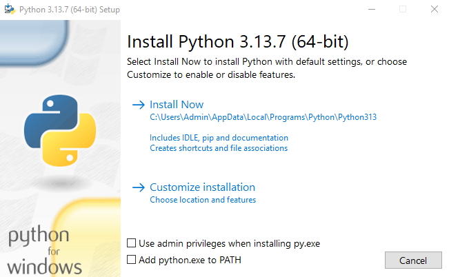
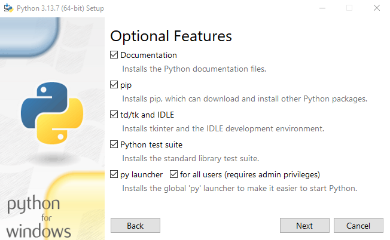
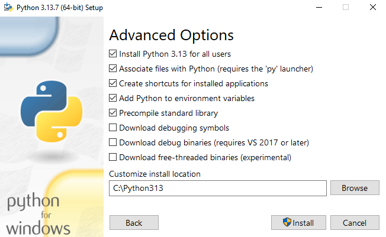
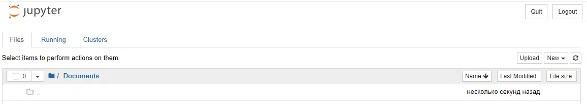
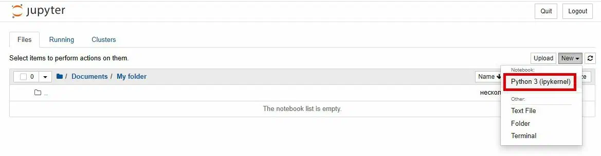

Введение в Python
Настройка рабочего места
Установка Python
Установка в Windows:
Для начала проверить, какая версия Windows на компьютере — 32-битная или 64-битная. Это будет указано в строке «Тип системы» на странице «Сведения о системе». Чтобы попасть туда, попробуйте один из этих способов:
Нажать одновременно клавиши Windows и Pause/Break
Открыть панель управления из меню Windows, оттуда перейти в «Система и безопасность», затем в «Система»
Нажать клавишу Windows, затем перейти по разделам Настройки > Система > О системе
Можно загрузить Python для Windows с официального веб-сайта: https://www.python.org/downloads/windows/.
Перейти по ссылке «Latest Python 3 Release - Python x.x.x». Если установлена 64-битная версия Windows, скачать Windows installer (64-bit). Если нет — скачать Windows installer (32-bit). После загрузки дистрибутива запустить его (двойным щелчком) и следовать инструкциям.
Обратите внимание на экран мастера установки, который называется «Setup» (Настройка): нужно пролистать его вниз и выбрать опцию «Add Python.exe to the PATH» (Добавить Python.exe к системной переменной PATH):



Примечание: если используется старая версия Windows (7, Vista или ещё более старую версия), и установка Python 3.13 завершается выводом сообщения об ошибке, можно попробовать:
либо установить все доступные обновления Windows и попробовать установить Python 3.13 заново;
либо установить более раннюю версию Python, например, 3.8.10.
Установка в Linux:
Вполне вероятно, что уже установлен Python. Чтобы проверить это (а также версию языка), откройте консоль и введи следующую команду:
python3 --version
Python 3.12.3
Если установлена другая версия Python, не меньше чем 3.9 (например, 3.9.19), то нет необходимости обновляться.
Если Python не установлен, то можно установить его следующим образом:
sudo apt install python3
Убедитесь, что установка прошла успешно, открыв приложение Терминал и запустив команду:
python3 --version
Python 3.12.3
Виртуальное окружение
Виртуальное окружение Python — это изолированное пространство для каждого проекта, которое содержит отдельный набор библиотек и зависимостей Python, не влияя на глобальную систему и другие проекты. Это позволяет работать с разными версиями одних и тех же пакетов в разных проектах без конфликтов и упрощает управление зависимостями и развертывание приложений.
Зачем нужны виртуальные окружения? 1. Изоляция зависимостей - каждый проект имеет свой набор пакетов и версий, и они не смешиваются. 2. Предотвращение конфликтов - если один проект требует версию библиотеки "A", а другой — версию "B", виртуальные окружения позволяют установить их обе без конфликта. 3. Чистота проекта - все зависимости проекта хранятся в отдельной директории, что делает проект организованным и переносимым. 4. Управление версиями - вы можете работать с разными версиями самого интерпретатора Python в разных окружениях. 5. Упрощение развертывания - вы можете легко воспроизвести то же самое окружение на другой машине, передав список зависимостей проекта.
Как это работает?
Виртуальное окружение — это по сути каталог с копией интерпретатора Python, а также отдельной папкой, где устанавливаются специфичные для проекта пакеты с помощью менеджера пакетов, такого как pip. Модуль venv входит в стандартную библиотеку Python и является основным инструментом для создания таких изолированных сред.
Пример
Представьте, что вы разрабатываете два сайта. Один сайт требует старую версию библиотеки "Flask", а другой — новую. Без виртуальных окружений вам пришлось бы выбирать одну версию для всего компьютера. С виртуальными окружениями вы можете создать два отдельных окружения: в одном установить старую версию Flask, в другом — новую.
Создание
py -m venv my_venv
Активация
Windows
my_venv\Scripts\activate
Linux
source my_venv/bin/activate
Jupyter Notebook
Установка
Нужно перейти в командную строку и установить сам ноутбук. В этом поможет специальная утилита — pip. С помощью неё можно распаковать, установить или обновить программы, в том числе и Jupyter. Утилита загружается на компьютер вместе с Python. Чтобы установить ноутбук, надо ввести команду:
pip install notebook
Если выводится сообщение Successfully installed, то Jupyter-ноутбук готов к запуску. Чтобы начать работу, используют команду
jupyter notebook
Основы работы
В Jupyter Notebook две основные части: веб-приложение и ноутбуки ― файлы, в которых работают с исходным кодом программы, запускают его и выводят данные в разных форматах. Для экспорта ноутбуков используют два формата ― PDF и HTML.
Что можно делать в веб-приложении:
-
запускать и редактировать код в браузере;
-
показывать результаты расчётов, используя схемы и графики;
-
использовать язык разметки Markdown и LaTeX.
Интерфейс ноутбука открывается прямо в браузере

Чтобы начать новый проект, нужно запустить Jupyter-ноутбук и создать папку для проектов. Затем нажать New в правой части экрана и выбрать в списке меню Folder.
Новая папка автоматически будет названа Untitled folder. Чтобы назвать её по-другому, нужно поставить галочку напротив имени и нажать Rename Чтобы создать ноутбук, нужно снова использовать New и выбрать Python 3.
